Sequential Circuits¶
约 3867 个字 预计阅读时间 13 分钟
Storage Elements and Sequential Circuit Analysis¶
Introduction¶

-
一个时序电路包含存储元件和组合逻辑电路。
-
存储元件的状态由次态方程决定: \(Next\,State=f(Inputs,State)\)
- Output function(Mealy): Outputs=g(Inputs,State)(由输入和当前状态共同决定)
- Output function(Moore): Outputs=h(State)(仅由当前状态决定)
Types of sequential circuits¶
Depends on the times at which:
- storage elements observe their inputs,and
- storage elements change their state
Synchronous: 要求比较严格：电路中所有元件必须同时更新，且更新的时间周期一致。
Asynchronous: 状态的更新任意时刻都可发生。如果时钟被看作一个输入，那么所有电路都是异步的。但是异步的时序电路使设计变得复杂。
Storage elements¶
Storing State
回顾我们之前学的门传输延迟电路，现在我们把输出端Y与A连接，就将组合逻辑电路变成了时序电路。
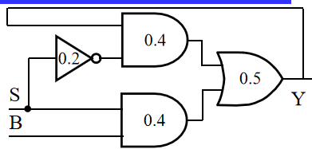
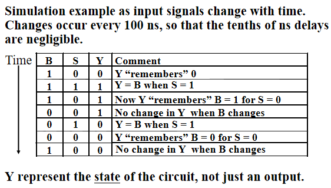
Latches(锁存器)¶
\(\overline{S}-\overline{R}\) Latch

可得到如下的时序状态：

注意当\(R=0,S=0\)时，\(Q,\overline{Q}\)都为1，如果我们将\(R,S\)改为1，\(Q\)和\(overline{Q}\)谁为1取决于门的传输延迟。因此\(R=0,S=0\) is forbidden as input pattern.
S-R Latch

Clocked S-R Latch
在之前的基础上我们增加一个时钟信号(clock or control)
- Has a time sequence behavior similar to the basic S-R latch except that the S and R inputs are only observed when the line C is high.
与之前SR锁存器相同，C=1,S=1,R=1是非法的。
D-Latch
我们想避免非法输入，避免未定义情况，因此引入D锁存器。

Note
在chapter3计算门输入成本时，我们一般计算G而不计算GN，是因为电路中的锁存器同时提供了\(Q\) 和\(\overline{Q}\)。
Flip-flops¶
Example

在锁存器中，有可能出现空翻现象，即不能做到在时钟信号一个周期内，状态只更新一次。
A solution to the latch timing problem is to break the closed path from Y to Y within the storage element. 即切断锁存器输入和输出的直接联系，采用触发器的设计。
主要有两种触发器：
- 在时钟信号高电平时修改第一个锁存器的值，保存第二个锁存器的值；在低电平时保存第一个，修改第二个，此时更新触发器的状态，称为主从触发器。
- 仅在时钟电平变换的边沿触发，即在特定时刻仅接受一个输入，分为上升沿触发和下降沿触发，统称为边沿触发器。
S-R Master-Slave Flip-Flop

一次性采样问题
假如在\(C=1，S=0，R=0\)时，S或者R发生微小的扰动(突然变成1后又回到0)，主锁存器由原先的保持状态变为修改状态,但是当S变回0时，主锁存器又回到保持状态，保持的值仍然为S=1而不会变回原来的0，该值就会被传到从锁存器中。
为解决一次性采样问题，我们采用边沿触发器。
Edge-Triggered D Flip-Flop

我们用上图来理解边沿触发器的行为。在上升沿前一刻，主锁存器可写，从锁存器只读；而在上升沿后一刻，主锁存器只读，从锁存器写入主锁存器存储的值，即上升沿前一刻写入主锁存器的内容。
在实际电路中，我们通常采用如下的电路图，它减少了门输入成本。

Standard Symbols for Storage Elements¶
注意符号图上的小圆圈，代表非。用来判断是何种锁存器/触发器
Direct Input¶
我们通常会对时序电路进行初始化，即在它开始运行之前赋予电路一个确定的状态，称为直接输入。这些输入通常是异步的。

以上图为例，S和R就作为直接输入，当\(\overline{S}\)端为0时我们将锁存器置为1，当\(\overline{R}\)端为0时我们复位为0
Sequential Circuit Analysis¶

相比组合电路，时序电路具有状态，因此除了输出与输入的关系之外，我们还要关注次态方程，即当前的状态和输入如何影响下一个状态。
Example

对于如上的电路,输入是\(x(t)\),输出是\(y(t)\),状态是\((A(t),B(t))\),我们需要关注的是输出方程与次态方程。
由于我们采用D锁存器，因此状态就是锁存器D的输入。可以得到如下布尔方程：

State Table¶
我们可以使用状态表来描述时序电路的逻辑。分为四列：当前状态，输入，次态，输出。为了得到状态表，需要先写出输出方程和次态方程。
Example

如上图所示的状态表的行数由状态数+输入个数决定，我们可以进行降维，将输入和次态写在一起。
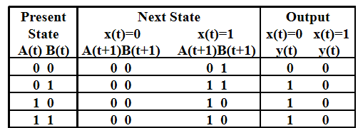
State Diagrams¶
时序逻辑电路也可以用状态图表示，它比状态表更好地描述了状态之间的转移关系。
Mealy type circuit and Moore type circuit
Mealy型电路输出既依赖于当前状态，也依赖于输入。Moore型只取决于当前状态。
对于状态图中标识输出的位置，由于Moore型电路只取决于当前状态，因此我们习惯标在状态的圆圈里，而Mealy型电路标在状态转移的弧上。
Example

由于输出标在弧上，因此该电路是Mealy型电路。

Moore型电路
在实际电路设计中，可能会存在一些输出是Moore型，一些输出是Mealy型的情况。
Equivalent State Definitions¶
当两个状态的输入相同时，如果它们的输出和次态都相同，则称这两个状态为等价状态。如果电路中有等价状态，那么我们可以将它们合并，以减少触发器的个数。
Example
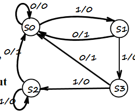
可以发现S2和S3是等价状态，将它们合并。
咦合并之后又发现等价状态S2和S1。通过两次等价状态的合并，我们在输入成本上减少了两个触发器。
Example
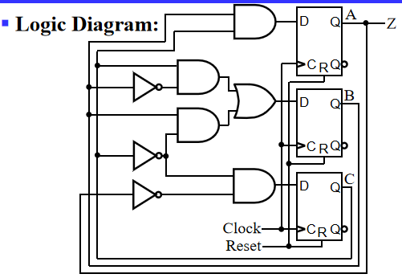
其中Clock连的是系统时钟，Reset是作为直接输入，将电路赋初值。但是不用将Clock和Reset在方程中描述。
对于如上的时序电路，我们可以通过一系列操作得到如下的状态图。
可以发现在有效的循环中，该电路的功能是一个模五计数器，而对于无效的状态111，101，110，可以发现它们的次态都回到了有效循环中。这可以有效防止微小扰动对电路的影响，处理无效状态。
Flip-Flop Timing Parameters¶
我们想要计算时序电路的最大工作频率，也就是要计算两个上升沿之间的最小间隔。为此需要考虑时序电路的传输延迟。
触发器延时
触发器的延时不仅仅是传输延迟，还有为了保证产生稳定输出信号所必要的时间。
- Setup Time: 采样边缘前输入信号需要保持稳定的时间，即输入信号需要在setup time之前改变好，否则这次改变不会被接收。
- Hold Time: 采样边缘后输入信号需要保持稳定的时间。
- \(t_{pd,ff}\)：触发器采样边缘到产生稳定输出的时间。
组合电路延时 即为传输延迟。

观察上图可发现S-R主从触发器的setup time占据一半的时钟周期，原因就是之前介绍的一次性采样，输入信号在C=1时不允许发生改变。
电路松弛时间 extra time in the clock period in addition to the sum of the delays and setup time on a path. 松弛时间必定非负。
因此我们可以得到两个上升沿的最小时间：
可以看到，由于主从触发器的\(t_s\)占了半个时钟信号，大约50%占空比，因此留给触发器和组合电路的传输时间就很少，在触发器和组合电路相同的情况下具有更长的周期，工作频率更小。这也是我们更常用边沿触发器的原因。 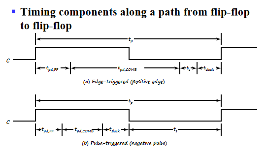
Sequential Circuit Design¶
现在我们需要知道怎么样来设计时序的电路。
在分析时序电路的行为时，我们依次得到状态方程，状态表，状态图。而设计时我们则反过来，先用状态图表达应用需求，再得到状态表等。大致遵循如下流程：
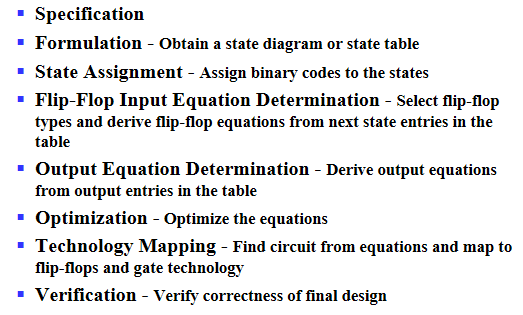
Specification¶
说明电路要做什么。包括文字描述，数学公式，硬件描述等
Formulation¶
状态的抽象¶
把电路的行为抽象为几个状态，以及状态之间的转移。
Sequence Recognizer Procedure
序列识别器：识别出给定的二进制序列。
初态：什么都没识别到。每识别到一个位更新一个状态，全部识别完毕后得到最终状态。
假设我们现在的电路需要识别1101二进制序列。如果识别到1101，则电路输出1。特别的，对于1101101，头和尾都是有效序列(1101101,1101101),两种情况都要考虑到。
对于Mealy型电路，我们得到的状态图和状态表如下：
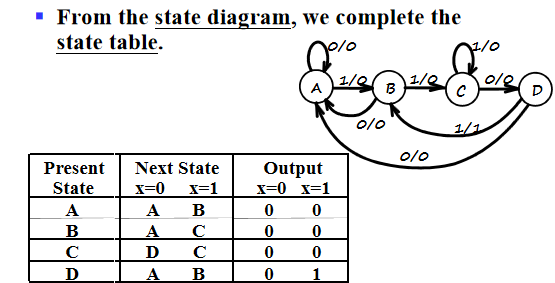
- A表明没有任何有效序列
- B表示收到1
- C：两个1
- D：110，当D再收到一个1时，输出1，同时由于最后一位1可以当作下一个1101序列的第一个1，因此回到B状态。
对于Moore型电路，我们需要再增加一个状态E代表成功识别，即输出1.
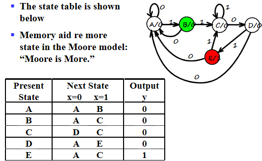
状态表的简化¶
一般情况下，原始状态图和原始状态表中存在着多余的状态，状态个数越多，电路中所需的触发器数目越多，成本也越高。因此我们需要除去多余状态，这就涉及到状态表的简化：不仅能正确反映设计的全部要求，而且状态的数目最少。
状态等效：上文已涉及。
状态等效的判别：
- 在所有输入情况下输出相同
- 同时，要么次态相同，要么次态交错，要么次态循环
次态交错，次态循环的解释

对于上图的状态\(S_i,S_j\),当输入为0时，输出和次态相同；当输入为1时，输出相同，\(S_i,S_j\)互为对方的次态，这种情况称作次态交错，\(S_i,S_j\)为等效状态。

对于上图的状态\(S_i,S_j\),当输入为1时，次态交错，当输入为1时，次态分别为\(S_k,S_l\).假如\(S_k,S_l\)为等效状态，则\(S_i,S_j\)也等效。即\(S_i,S_j\)等效与否依赖于\(S_k,S_l\)是否等效。

对于上图的状态，\(S_i,S_j\)与\(S_k,S_l\)相互依赖，则称为次态循环，这种情况我们认为这四个状态都等效。
化简状态表 现在我们知道了等效状态的定义，下一步就需要化简状态表。分为两种方法：观察法和隐含表法。观察法就是直接看状态表找等效状态，这里不展开。
隐含表法化简状态表
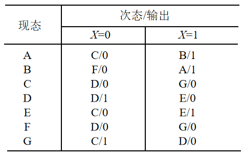
对于上面的状态图，具有较多状态，使用观察法不现实，我们可以通过隐含表法化简。隐含表就是个下三角阵，行数为状态数减一，列数为状态个数。行列交叉的格子里填的是两个状态等效与否，以及等效需要的条件。如下图所示：
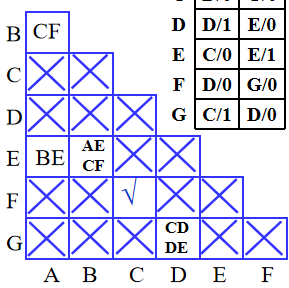
如果状态对等效，则在格子里打勾，不等效则打叉（根据输出是否相同可以直接判断）。如果等效与否需要进一步检查，则标记次态对。对于标记的次态对，进行关联比较，确定最终等效状态对。
最后确定最大等效类，画出最小化状态表。
如上的状态表中有四个等效对AB,AE,BE,CF,因此最大等效类为ABE，总共电路中有四个状态ABE,CF,D,G,令上述四个状态为abcd，可得到最小化状态表：
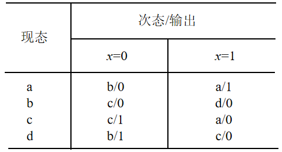
State Assignment¶
在得到最小化状态表后，由于我们的目的是设计电路，而状态表中的状态只是抽象的字母，因此我们现在需要做的是为每个状态分配二进制位，以进行电路的设计。
但是\(n\)种状态，总共有\(n!\)种分配二进制位的方法，我们应该如何选择呢？对于不同的分配，设计出来的电路成本及复杂程度也会很不一样，如下是一个例子。
Example

对于上面的状态表，我们考虑两种分配方案：按计数顺序以及按格雷码，结果依次为如下两图：
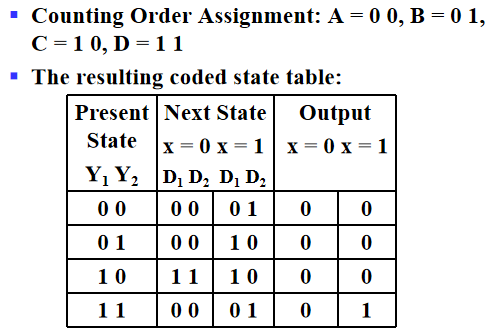

相应的，我们可以画出卡诺图来得到次态方程，输出方程的逻辑表达式,并计算门输入成本。
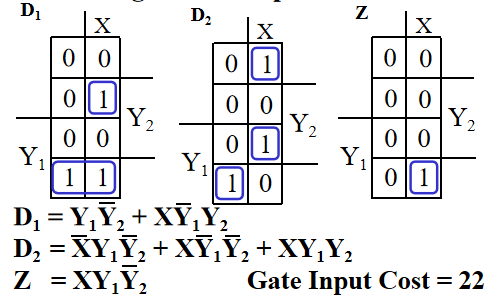
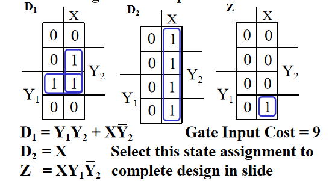
可以看到，使用第二种方案的门输入成本显著小于第一种。
所以我们状态分配的任务不仅是决定编码的长度，还需要寻找一种最佳的或接近最佳的状态分配方案。
因此我们需要了解一些状态分配的技巧。
基本原则
- 在相同输入条件下具有相同次态的现态，应尽可能分配相邻的二进制代码
- 在相邻输入条件，同一现态的次态应尽可能分配相邻的二进制代码
- 输出完全相同的现态应尽可能分配相邻的二进制代码
- 最小化状态表中出现次数最多的状态或初始状态应分配逻辑0
一般情况下，我们优先考虑第一条原则。
Example

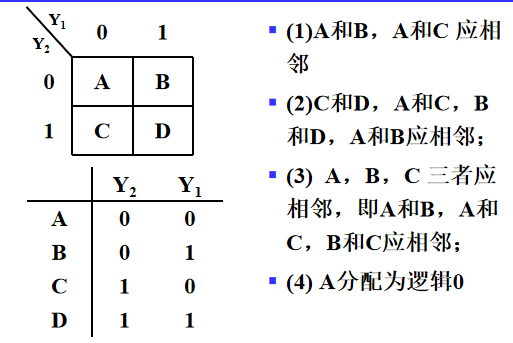
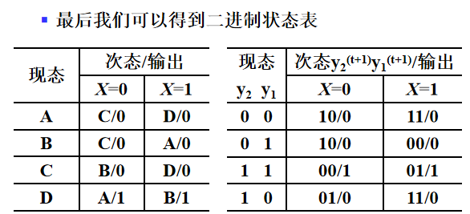
Map Technology¶
画出电路图，并采用与非门的方式实现，与组合逻辑电路设计的工艺映射相同。
A little Practice
到这里我们应该具备设计出时序电路的能力。
明白需求->画状态图->得到状态表->寻找等效状态，化简状态表->状态分配->工艺映射
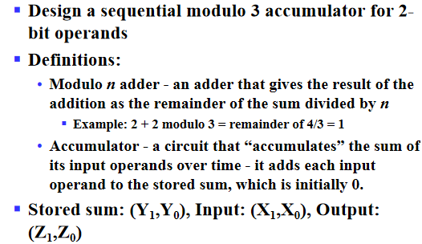
Other Flip-Flop Types¶
J-K Flip-Flop¶
除了在\(J=1,K=1\)时次态取反，其它与SR主从触发器相同，也同样存在一次性采样问题。
可以使用D触发器来实现J-K触发器的功能。复习时手动模拟一下。

这里使用了边沿触发器，可以解决一次性采样问题。
逻辑符号图：

T Flip-Flop¶
T触发器只有一个输入T，当T为0时为保持状态，当T为1时求反。

Basic Flip-Flop Descriptors¶
对于触发器，我们有不同的描述方法。
在分析时序电路中，由于我们想知道电路的作用，因此我们使用特征表和特征方程来描述，即通过当前状态和输入得到次态。
在设计时序电路中，由于我们已知的是当前状态已经每个当前状态对应的次态，我们想通过他们来得到触发器的输入方程，因此使用激励表来描述。
Flip-Flop Descriptors
D触发器

SR触发器

T触发器
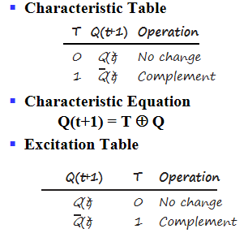
JK触发器
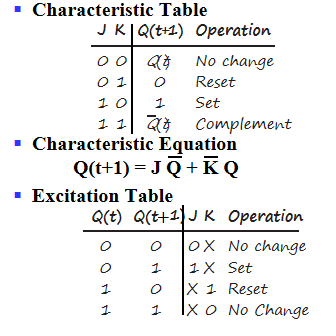
创建日期: 2023年11月26日 13:09:28